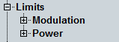

Limit Settings
The "Limits" section defines upper limits for the modulation and power results.
For details, see "Limit Settings and Conformance Requirements".

Limit settings
The limits can be configured via the following remote commands.
Remote command: